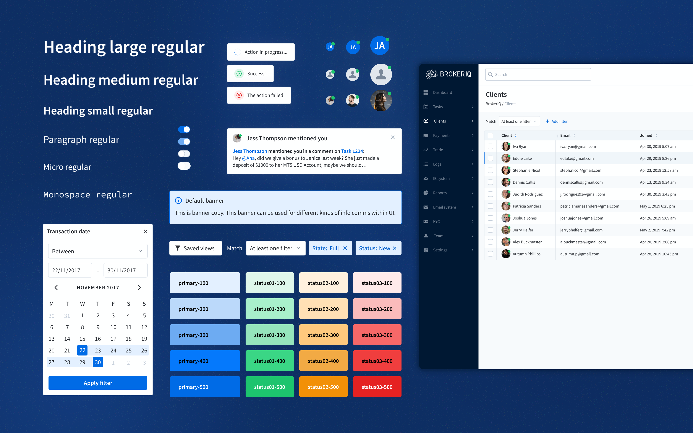

Design system for complex B2B fintech
I led the implementation of TradeCore's first design system to improve consistency, speed up delivery, and give engineering and design a shared language. I reviewed the existing codebase to ground the specs, ran research to validate decisions, and sequenced the rollout so engineering could move in parallel. It was adopted across our existing product suite and became the foundation for every new one.